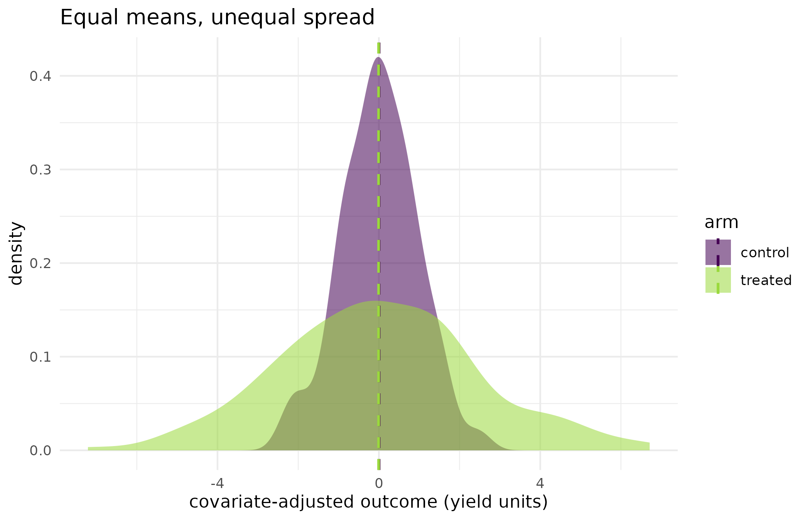

A treatment that changes the spread and not the mean
Source:vignettes/kernR-drtest.Rmd
kernR-drtest.RmdWhy
A risk analyst is looking at a management practice whose average did nothing. The mean yield under the new practice is the same as under the old one, and every mean-based method I have tells me there is no effect. But the good years are better and the bad years are worse, and it is the bad years that decide whether the business survives. Is there a test that calls that an effect? This vignette answers with the two doubly robust kernel tests for distributional treatment effects, on synthetic designs where the treatment shifts the mean, shifts only the variance, and acts on a subgroup with imperfect overlap.
What
dr_date_test() tests the Distributional Average
Treatment Effect hypothesis
over the whole population: not whether the two potential-outcome
distributions have the same mean, but whether they are the same
distribution. It compares the two kernel mean embeddings, so a change in
variance, skewness, modality or tail weight counts as an effect exactly
as a shift in location does.
dr_dett_test() tests the Distributional Effect on the
Treated,
,
restricting the question to the units that were actually treated. That
restriction buys a weaker assumption: it needs overlap only on one side,
so covariate regions with no control units do not invalidate it.
Both are doubly robust. Each combines a propensity model
(,
fitted by estimate_propensity()) with an outcome model, and
the estimator stays consistent if either of the two is correctly
specified. assess_overlap() is the companion diagnostic for
the positivity assumption both rely on.
kernel_causal_test() reaches the same tests through a
formula, with method = "dr-date" or "dr-dett".
Every call returns a kernel_test_result carrying the
statistic, the permutation null, the p-value and the effective sample
size of the weights.
Do
A mean shift, which any method would find
A synthetic design of 300 observations: two covariates drive treatment assignment, and treatment adds a constant 1.0 to the outcome.
set.seed(42L)
n_obs <- 300L
x_cov <- matrix(rnorm(n_obs * 2L), n_obs, 2L)
t_arm <- rbinom(n_obs, 1L, plogis(0.3 * x_cov[, 1L] - 0.2 * x_cov[, 2L]))
y_shift <- t_arm * 1.0 + 0.5 * x_cov[, 1L] + rnorm(n_obs, sd = 0.5)
fit_shift <- dr_date_test(y_shift, t_arm, x_cov,
n_permutations = 299L, seed = 1L
)
fit_shift
#>
#> DR-DATE Test
#>
#> Statistic: 0.37054
#> P-value: 0.0033
#> N: 300
#> Perms: 299
#> Kernel Y: rbf (bw = 0.8972)
#> ESS: 139.7A variance effect and nothing else
The same machinery on a synthetic design in which treatment multiplies the outcome’s standard deviation by 2.5 and leaves the mean exactly where it was: each arm’s noise is centred within the arm, so the treatment contributes no mean shift by construction rather than only in expectation. This is the design a mean-based method has no power against.
set.seed(42L)
n_var <- 400L
x_var <- matrix(rnorm(n_var * 2L), n_var, 2L)
t_var <- rbinom(n_var, 1L, plogis(0.3 * x_var[, 1L]))
noise_treated <- rnorm(n_var, sd = 2.5)
noise_control <- rnorm(n_var, sd = 1)
noise_treated <- noise_treated - mean(noise_treated[t_var == 1L])
noise_control <- noise_control - mean(noise_control[t_var == 0L])
y_var <- (1L - t_var) * noise_control + t_var * noise_treated +
0.5 * x_var[, 1L]The mean-based reading of this design, for comparison: an ordinary least squares fit of the outcome on treatment and the two covariates, which is what a difference-in-means analysis amounts to once the covariates are adjusted for.
lm_variance <- lm(y_var ~ t_var + x_var)
lm_effect <- coef(lm_variance)[["t_var"]]
lm_p <- summary(lm_variance)$coefficients["t_var", "Pr(>|t|)"]
sd_treated <- sd(y_var[t_var == 1L])
sd_control <- sd(y_var[t_var == 0L])
round(c(lm_effect = lm_effect, lm_p = lm_p,
sd_treated = sd_treated, sd_control = sd_control), 3L)
#> lm_effect lm_p sd_treated sd_control
#> -0.011 0.954 2.505 1.108
fit_variance <- dr_date_test(y_var, t_var, x_var,
n_permutations = 299L, outcome_model = "zero", seed = 1L
)
fit_variance
#>
#> DR-DATE Test
#>
#> Statistic: 0.108574
#> P-value: 0.0033
#> N: 400
#> Perms: 299
#> Kernel Y: rbf (bw = 1.563)
#> ESS: 176.9The effect on the treated, with imperfect overlap
A synthetic design in which treatment assignment depends more
strongly on the first covariate, so some covariate regions carry almost
no controls. dr_dett_test() needs overlap only on the
treated side.
set.seed(42L)
n_dett <- 300L
x_dett <- matrix(rnorm(n_dett * 2L), n_dett, 2L)
t_dett <- rbinom(n_dett, 1L, plogis(0.5 * x_dett[, 1L]))
y_dett <- t_dett * rnorm(n_dett, mean = 0.5, sd = 1.5) +
(1L - t_dett) * rnorm(n_dett) + x_dett[, 1L]
overlap <- assess_overlap(
estimate_propensity(t_dett, x_dett)$scores, t_dett
)
overlap
#> Propensity Score Overlap Diagnostic
#>
#> Treated: min = 0.258, q25 = 0.435, median = 0.531, q75 = 0.640, max = 0.805
#> Control: min = 0.150, q25 = 0.366, median = 0.468, q75 = 0.565, max = 0.836
#> Overlap: 79.7 %
fit_dett <- dr_dett_test(y_dett, t_dett, x_dett,
n_permutations = 299L, seed = 1L
)
fit_dett
#>
#> DR-DETT Test
#>
#> Statistic: 0.0194285
#> P-value: 0.0533
#> N: 300
#> Perms: 299
#> Kernel Y: rbf (bw = 1.557)
#> ESS: 102.2The same question through a formula
dat_dett <- data.frame(
y = y_dett, treatment = t_dett,
x1 = x_dett[, 1L], x2 = x_dett[, 2L]
)
fit_formula <- kernel_causal_test(
y ~ treatment | x1 + x2,
data = dat_dett, method = "dr-date",
n_permutations = 299L, seed = 1L
)
fit_formula
#>
#> DR-DATE Test
#>
#> Statistic: 0.0271132
#> P-value: 0.0067
#> N: 300
#> Perms: 299
#> Kernel Y: rbf (bw = 1.557)
#> ESS: 133.7The figure: what the mean cannot show
resid_y <- residuals(lm(y_var ~ x_var))
spread_df <- data.frame(
outcome = resid_y,
arm = ifelse(t_var == 1L, "treated", "control")
)
mean_df <- data.frame(
arm = c("control", "treated"),
outcome = c(mean(resid_y[t_var == 0L]), mean(resid_y[t_var == 1L]))
)
ggplot2::ggplot(spread_df, ggplot2::aes(x = outcome, fill = arm)) +
ggplot2::geom_density(alpha = 0.55, colour = NA) +
ggplot2::geom_vline(
data = mean_df,
ggplot2::aes(xintercept = outcome, colour = arm),
linetype = "dashed", linewidth = 0.8
) +
ggplot2::scale_fill_viridis_d(name = "arm", end = 0.85) +
ggplot2::scale_colour_viridis_d(name = "arm", end = 0.85) +
ggplot2::labs(
x = "covariate-adjusted outcome (yield units)", y = "density",
title = "Equal means, unequal spread"
) +
ggplot2::theme_minimal()
Covariate-adjusted outcome by arm on the variance-only design (residuals from a fit of the outcome on the two covariates). The two arm means, dashed vertical lines, sit almost on top of each other; the treated arm’s distribution is more than twice as wide. A mean-based test compares the two dashed lines; DR-DATE compares the two curves.
| Design | Test | Statistic | p-value | ESS | n | ESS (% of n) |
|---|---|---|---|---|---|---|
| mean shift of 1.0 | dr_date_test() | 0.3705 | 0.0033 | 139.7 | 300 | 46.6 |
| variance only, mean preserved | dr_date_test() | 0.1086 | 0.0033 | 176.9 | 400 | 44.2 |
| effect on the treated | dr_dett_test() | 0.0194 | 0.0533 | 102.2 | 300 | 34.1 |
| effect on the treated, formula | kernel_causal_test(dr-date) | 0.0271 | 0.0067 | 133.7 | 300 | 44.6 |
Read
The mean-shift design is the sanity check: DR-DATE returns a statistic of 0.371 with a p-value of 0.0033, so the test finds the effect a difference-in-means would also have found.
The variance-only design is the point of the vignette. The least squares treatment coefficient is -0.011 yield units with a p-value of 0.954, so the mean-based reading of this design is that nothing happened. Meanwhile the treated arm’s standard deviation is 2.51 against 1.11 in the control arm, more than double. DR-DATE returns 0.109 with a p-value of 0.0033, the smallest value 299 permutations can express. The figure shows why: the two dashed mean lines coincide and the two curves do not. An analyst deciding on downside risk cares about the curves.
On the treated-effect design the propensity scores overlap over 79.7 per cent of their combined range, so positivity is imperfect but not broken; the overlap diagnostic does not flag it as poor overlap. DR-DETT returns 0.0194 with a p-value of 0.0533, which does not clear the conventional five per cent threshold. The formula front door run on the same data through DR-DATE gives 0.0271 and 0.0067: the two estimands differ, so the two numbers are not expected to agree exactly, and the table reports both rather than choosing between them.
Across the four rows the effective sample size of the weights runs
from 34 to 47 per cent of the observations each test used. That is well
clear of the ten per cent floor below which both tests set
ess_warning, and on this run no row trips that flag, so
none of these verdicts rests on a handful of dominant weights.
Limits
All four designs are synthetic, with the propensity model correctly
specified by construction; double robustness is a guarantee about one of
two models being right, not about both being wrong. These tests report
that the two distributions differ, not how or by how much: a rejection
here is a licence to look at the curves, not an effect size, and nothing
in this vignette quantifies the change in the lower tail that motivated
the question. The variance-only design uses
outcome_model = "zero", which leans the estimator entirely
on the propensity side, and the default outcome model would be the
better choice whenever the outcome is predictable from the covariates.
Both tests assume positivity; DR-DETT relaxes it to one side but does
not remove it, and the overlap diagnostic above is a summary of the
propensity score, not a proof that the assumption holds. Permutation
p-values cannot fall below 1 / (n_permutations + 1).
What to read next
Does the treatment cause the outcome, or do they share a cause? handles the continuous-treatment version of the same causal question and shows the effective-sample-size gate declining a verdict outright. When plots sit inside farms runs these same tests on clustered designs, where the permutation null used here is not valid. Did the management change shift the simulated distribution? applies DR-DATE to a pair of simulator ensembles rather than to a field record.
References
- Fawkes, J., Hu, R., Evans, R. J., & Sejdinovic, D. (2024). Doubly robust kernel statistics for testing distributional treatment effects. Transactions on Machine Learning Research.
Reproduce
Seed 42 for all three synthetic designs;
seed = 1L passed to every test so the propensity fit, the
outcome fit and the permutation draws are fixed. Package versions
follow.
sessionInfo()
#> R version 4.6.1 (2026-06-24)
#> Platform: x86_64-pc-linux-gnu
#> Running under: Ubuntu 24.04.4 LTS
#>
#> Matrix products: default
#> BLAS: /usr/lib/x86_64-linux-gnu/openblas-pthread/libblas.so.3
#> LAPACK: /usr/lib/x86_64-linux-gnu/openblas-pthread/libopenblasp-r0.3.26.so; LAPACK version 3.12.0
#>
#> locale:
#> [1] LC_CTYPE=C.UTF-8 LC_NUMERIC=C LC_TIME=C.UTF-8
#> [4] LC_COLLATE=C.UTF-8 LC_MONETARY=C.UTF-8 LC_MESSAGES=C.UTF-8
#> [7] LC_PAPER=C.UTF-8 LC_NAME=C LC_ADDRESS=C
#> [10] LC_TELEPHONE=C LC_MEASUREMENT=C.UTF-8 LC_IDENTIFICATION=C
#>
#> time zone: UTC
#> tzcode source: system (glibc)
#>
#> attached base packages:
#> [1] stats graphics grDevices utils datasets methods base
#>
#> other attached packages:
#> [1] kernR_0.8.2
#>
#> loaded via a namespace (and not attached):
#> [1] vctrs_0.7.3 cli_3.6.6 knitr_1.51
#> [4] rlang_1.3.0 xfun_0.60 otel_0.2.0
#> [7] generics_0.1.4 S7_0.2.2 textshaping_1.0.5
#> [10] data.table_1.18.6.1 jsonlite_2.0.0 labeling_0.4.3
#> [13] glue_1.8.1 htmltools_0.5.9 PESTO_0.10.1
#> [16] ragg_1.5.2 sass_0.4.10 scales_1.4.0
#> [19] rmarkdown_2.32 grid_4.6.1 evaluate_1.0.5
#> [22] jquerylib_0.1.4 fastmap_1.2.0 yaml_2.3.12
#> [25] lifecycle_1.0.5 compiler_4.6.1 RColorBrewer_1.1-3
#> [28] fs_2.1.0 Rcpp_1.1.2 farver_2.1.2
#> [31] systemfonts_1.3.2 digest_0.6.39 viridisLite_0.4.3
#> [34] R6_2.6.1 bslib_0.12.0 withr_3.0.3
#> [37] tools_4.6.1 gtable_0.3.6 pkgdown_2.2.1
#> [40] ggplot2_4.0.3 cachem_1.1.0 desc_1.4.3